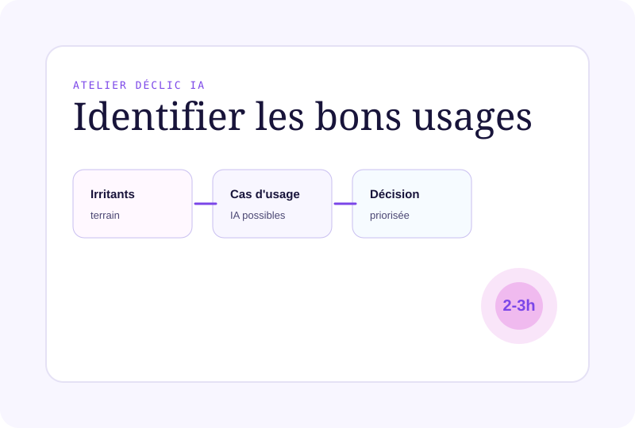
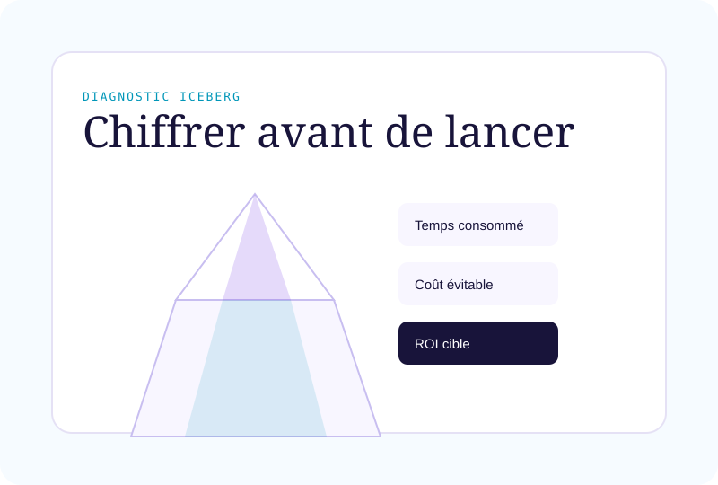
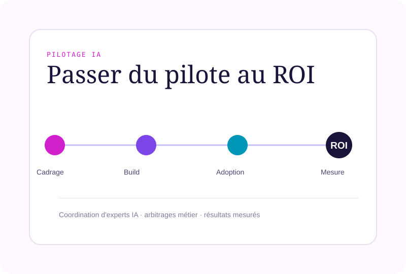

Trois étapes,
un chemin vers le ROI
De la sensibilisation à la mise en production. Chaque offre peut être engagée indépendamment selon votre stade actuel.
Atelier Déclic IA
2–3h · Identifier & prioriser vos premiers cas d'usage
Diagnostic Index Iceberg
3–6 sem. · Audit complet + roadmap ROI
Pilotage IA & Freelances
90 jours · Mise en œuvre jusqu'au ROI
Atelier Déclic IA utile
Vous entendez parler d'IA de partout. Cet atelier vous donne une vision claire de ce qu'elle peut apporter à votre entreprise spécifiquement, sans vendeur de licences ni jargon technologique.
En 2 à 3 heures, vous repartez avec 3 à 5 cas d'usage concrets identifiés sur vos activités réelles, les risques explicités et les conditions de réussite pour chacun.
Pour qui :
Dirigeant TPE/PMEComité de directionDécideur sans background tech
Ce que vous obtenez
- Tour d'horizon des usages IA réels dans votre secteur
- Cartographie rapide Iceberg sur 1–2 métiers clés
- 3 à 5 cas d'usage IA concrets et priorisés, issus de vos activités réelles
- Analyse des risques et conditions de réussite pour chaque piste
- Document de synthèse partageable en interne
Diagnostic & cadrage
Index Iceberg
Diagnostic complet de vos processus, par observation directe et interviews métiers. Chaque tâche visible et invisible est cartographiée, mesurée et évaluée selon son potentiel IA.
Vous obtenez un business case documenté pour chaque projet IA — pas une liste d'outils, mais un arbitrage rigoureux par impact, effort et risque, présentable à votre CODIR.
C'est l'offre phare : la seule qui vous donne la visibilité complète pour décider. Investir quand c'est justifié. Stopper quand ce ne l'est pas.

Livrables concrets
- Rapport Index Iceberg : cartographie complète visible / invisible
- Mesure du temps réellement consommé par catégorie de tâche
- Qualification des tâches assistables / automatisables par IA
- Business case synthétique pour chaque projet IA (ROI, effort, risque)
- Roadmap 6–12 mois avec 2 à 5 cas d'usage priorisés et chiffrés
- Scénarios d'investissement : low, medium, high
- Restitution CODIR, format décisionnel
Pilotage IA &
réseau de freelances
Vous gardez la main sur la stratégie. Think'UP sécurise l'exécution : sélection des bons experts, rédaction des cahiers des charges métier, pilotage des livrables, mesure des résultats.
Pas de recrutement d'équipe IA. Pas d'intermédiaire entre votre métier et les experts techniques. Un interlocuteur unique — Patrick Langlais — du diagnostic à la mesure du ROI.

Ce que Think'UP prend en charge
- Cahiers des charges métier précis et exploitables par les freelances
- Sélection des experts IA adaptés à chaque projet
- Challenge des devis et approches techniques proposées
- Suivi hebdomadaire des livrables avec validation côté métier
- Mise en place des indicateurs de résultats : temps, qualité, ROI
- Accompagnement à la conduite du changement
- Transfert de compétence pour réduire la dépendance externe
- L'Atelier Déclic IA est le point d'entrée naturel. En 2 à 3 heures, vous comprenez ce que l'IA peut faire pour votre entreprise spécifiquement et repartez avec 3 à 5 pistes concrètes. Aucune compétence technique requise.
- Les trois offres s'enchaînent logiquement mais chacune peut être engagée indépendamment. Le Diagnostic peut démarrer directement si votre organisation est déjà sensibilisée. Le Pilotage peut également s'appliquer à des projets IA déjà initiés et bloqués.
- Les deux. L'Atelier est proposé en visio ou en présentiel. Le Diagnostic inclut des phases d'observation en présentiel et des restitutions à distance. Le Pilotage fonctionne en mode hybride.
- Non. Think'UP est conçu pour des dirigeants sans background technique. La méthode part du métier, pas de la technologie. Patrick Langlais parle marges, délais, charge — pas algorithmes.
Quelle offre correspond à votre stade ?
En 30 minutes d'échange, Patrick Langlais identifie l'étape la plus utile maintenant — sans engagement.